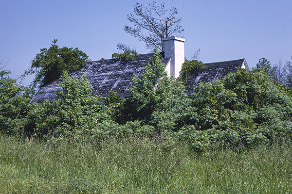

Chapter 8. Noxious Weeds
§ 3.2-800. Definitions.
As used in this chapter, unless the context requires a different meaning:
- "Infested" means the establishment of a noxious weed or exposure to such weed, which would be reasonable cause to believe that establishment could occur.
- "Move" means to ship, offer for shipment, receive for transportation, carry, or otherwise transport, move, or allow to be moved.
- "Noxious weed" means any living plant, not widely disseminated, or part thereof, declared by the Board through regulations under this chapter, to be detrimental to crops, surface waters, including lakes, other desirable plants, livestock, land, or other property, or to be injurious to public health or the economy.
1970, c. 175, § 3.1-296.12; 1996, c. 266; 2008, c. 860.
§ 3.2-803. Cost of controlling noxious weeds.
The cost of controlling or eradicating noxious weeds on all property owned or controlled by a State department or political subdivision thereof or control authority, agency, commission, or board, including highways, roadways, streets, alleys, and rights-of-way, shall be paid by the entity out of funds appropriated for its use. When it is not feasible for the entity to conduct the control program, the Commissioner may proceed with the control and the entity shall reimburse the cost and these moneys shall be refunded to the appropriation from which they were expended.
1970, c. 175, § 3.1-296.15; 2008, c. 860.
§ 3.2-804. Prohibited acts; noxious weeds.
No person shall violate any provisions of this chapter or any regulation adopted hereunder. No person shall move, transport, deliver, ship, or offer for shipment into or within the Commonwealth any noxious weed, or part thereof, without first obtaining a permit from the Commissioner. Such permit shall be issued only after it has been determined that the noxious weed is generally present already or it is for scientific purposes subject to prescribed safeguards.
1970, c. 175, § 3.1-296.16; 2008, c. 860.
§ 3.2-805. Authority to stop sale or delivery of noxious weeds.
The Commissioner, in order to prevent the introduction or dissemination of noxious weeds, may stop delivery, stop sale, seize, destroy, treat, or order returned to the point of origin, at the owner's expense, any noxious weed, article, or substance whatsoever, if transported or moved within the Commonwealth, or if existing on any premises, or brought into the Commonwealth from any place outside thereof, if such is found by him to be infested with any noxious weed subject to the provisions of this chapter.
1970, c. 175, § 3.1-296.17; 2008, c. 860.
§ 3.2-806. Access to plants or plant products; state and local police cooperation upon request.
The Commissioner shall have access to plants or plant products or any other article or substance suspected of being infested with a noxious weed for inspection and shall be provided with full information as to origin and destination of same by the person in possession of any plants or other articles.
State and local police, upon request in specific instances, shall cooperate with the Commissioner in the enforcement of this chapter. This chapter shall supersede any ordinances in the Commonwealth insofar as carrying out its intent.
1970, c. 175, § 3.1-296.19; 2008, c. 860.
Return to the Title 3.2 Table of Contents Previous Chapter || Back to Top || Next Chapter